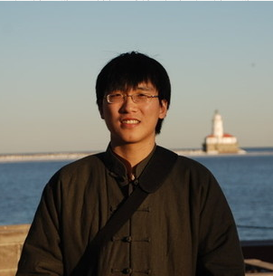

 Navy Pier, Chicago, IL (Spring, 2012)Xi Tan
Research Interests: Machine Learning and Computational Finance Ph.D in Computer Science (Machine Learning), Purdue University, 2017. - M.S. in Mathematics (Computational Finance), 2017. - M.S. in Statisics (Mathematical Statistics), 2014; Passed Ph.D qualifying exams in Statistics. - M.S. in Computer Science (Machine Learning), 2013. M.Phil in Computer Science, Trinity College, University of Cambridge (UK), 2008 B.S. in Computer Science, Northwestern Polytechnical University (P.R.China), 2007 E-mail: tan19 at purdue dot edu
==== What's New ====
- MS + MFC [{ML+STAT} + {MATH+FINANCE+CS}] - 英文单词 + 书法 + 钢琴 - 高中文理科(语、数、外、物、化、生；地、政、历)；古籍（十三经、史记、资治通鉴） - 普通大学物理、普通大学化学； - 政治、历史、哲学；音乐、美术、文学; 外语 - 智育、体育 - Misc.
Ph.D = Passion + Hardworking + Discpline - 9/15/2016, West Lafayette, IN 如果对形势的分析过于理想和乐观，列出来的计划就容易不切实际。 如果执行计划的时候过于任性，不能够按照轻重缓急的原则去安排，计划就会乱套。 如果做一件事情的时候不能够专注，反而虎头蛇尾、三天打鱼两天晒网，事情就会完成得不好。 解决以上问题的办法有六个字：务实、克己、专注。 另外，要作息规律、生活节制、经常运动、积极乐观。这是一切的前提。 - 2014年7月21日，于Jersey City, NJ.
~ Simple and Beautiful ~ [Last Update: 6/14/2016]